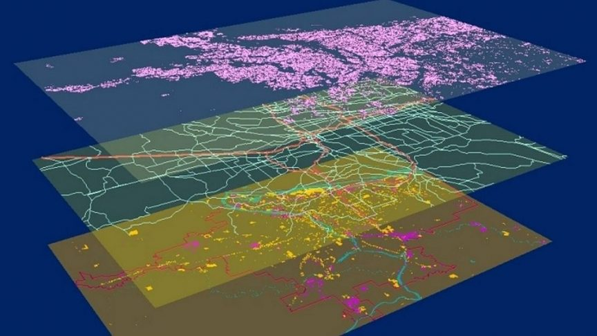

CDI Consulting provides a host of cutting edge GIS services that supplies our clients with valuable tools for making precise decisions
Address geocoding and reverse geocoding
Cartography and cartographic modeling
Data analysis, data output, and data production
Geostatistics
Routing for emergency and distribution services
Multi-criteria decision analysis
Topological modelling
Urban planning and design
CDI Consulting is an industry leader in equiping clients with top of the line aerial site intelligence for construction sites
Urban planning and design
2D high-resolution drone maps
3D construction site models
Statistical reports
CDI Consulting precision agriculture drone data gives farmers critical information to aid in achieving reduced costs and maximum yields
NDVI prescription maps
Leaf area index maps
Soil moisture maps
Veriable rate datasets for agricultural equipment
Soil nutrient mapping